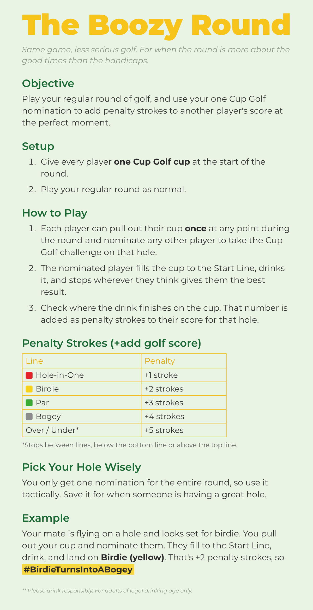
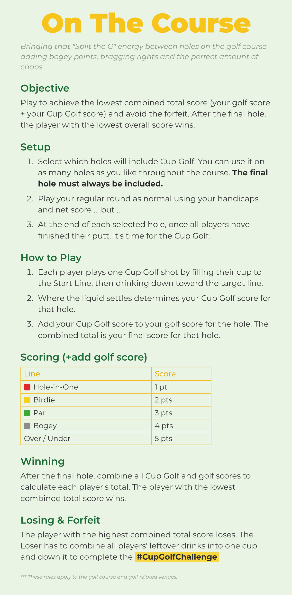
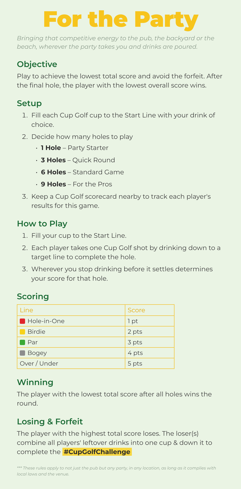

Three ways to play. One cup. Pick your game.

Same game, less serious golf. For when the round is more about the good times than the handicaps.
Play your regular round of golf, and use your one Cup Golf nomination to add penalty strokes to another player's score at the perfect moment.
| Line | Penalty |
|---|---|
| Hole-in-One | +1 stroke |
| Birdie | +2 strokes |
| Par | +3 strokes |
| Bogey | +4 strokes |
| Over / Under* | +5 strokes |
*Stops between lines, below the bottom line or above the top line.
You only get one nomination for the entire round, so use it tactically. Save it for when someone is having a great hole.
Your mate is flying on a hole and looks set for birdie. You pull out your cup and nominate them. They fill to the Start Line, drink, and land on Birdie (yellow). That's +2 penalty strokes, so #BirdieTurnsIntoABogey
** Please drink responsibly. For adults of legal drinking age only.

Bringing that "Split the G" energy between holes on the golf course - adding bogey points, bragging rights and the perfect amount of chaos.
Play to achieve the lowest combined total score (your golf score + your Cup Golf score) and avoid the forfeit. After the final hole, the player with the lowest overall score wins.
| Line | Score |
|---|---|
| Hole-in-One | 1 pt |
| Birdie | 2 pts |
| Par | 3 pts |
| Bogey | 4 pts |
| Over / Under | 5 pts |
After the final hole, combine all Cup Golf and golf scores to calculate each player's total. The player with the lowest combined total score wins.
The player with the highest combined total score loses. The Loser has to combine all players' leftover drinks into one cup and down it to complete the #CupGolfChallenge
*** These rules apply to the golf course and golf related venues.

Bringing that competitive energy to the pub, the backyard or the beach, wherever the party takes you and drinks are poured.
Play to achieve the lowest total score and avoid the forfeit. After the final hole, the player with the lowest overall score wins.
| Line | Score |
|---|---|
| Hole-in-One | 1 pt |
| Birdie | 2 pts |
| Par | 3 pts |
| Bogey | 4 pts |
| Over / Under | 5 pts |
The player with the lowest total score after all holes wins the round.
The player with the highest total score loses. The loser(s) combine all players' leftover drinks into one cup & down it to complete the #CupGolfChallenge
*** These rules apply to not just the pub but any party, in any location, as long as it complies with local laws and the venue.
These are just the starting tee. Mix the games, invent new penalties, add a forfeit or two. House rules are part of the fun, so make them up as you go.
#CupGolfChallenge
Never drink and drive. Do not drink while pregnant. Keep out of reach of children. Consult a healthcare professional if you have any medical conditions or are taking medication.
No alcohol is included.
Drink in moderation.
United States: 21+
United Kingdom: 18+
Canada: 18+ 19+ (varies by province)
For adults of legal drinking age only.
Follow local laws and venue rules.